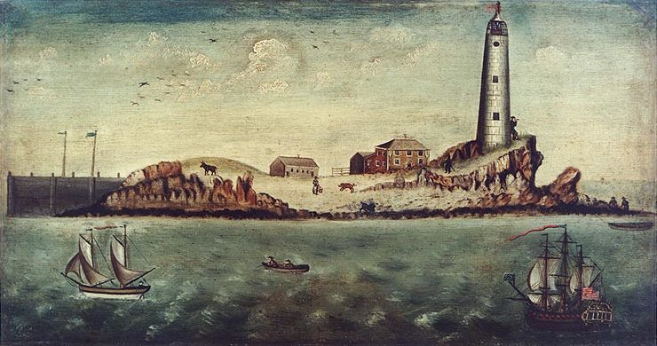
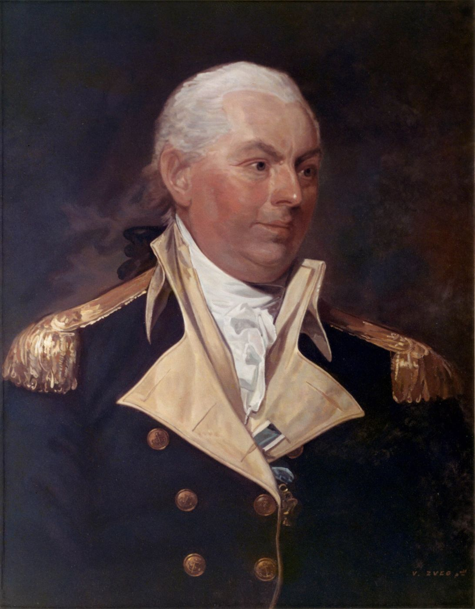
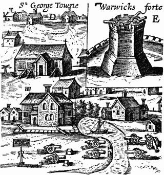
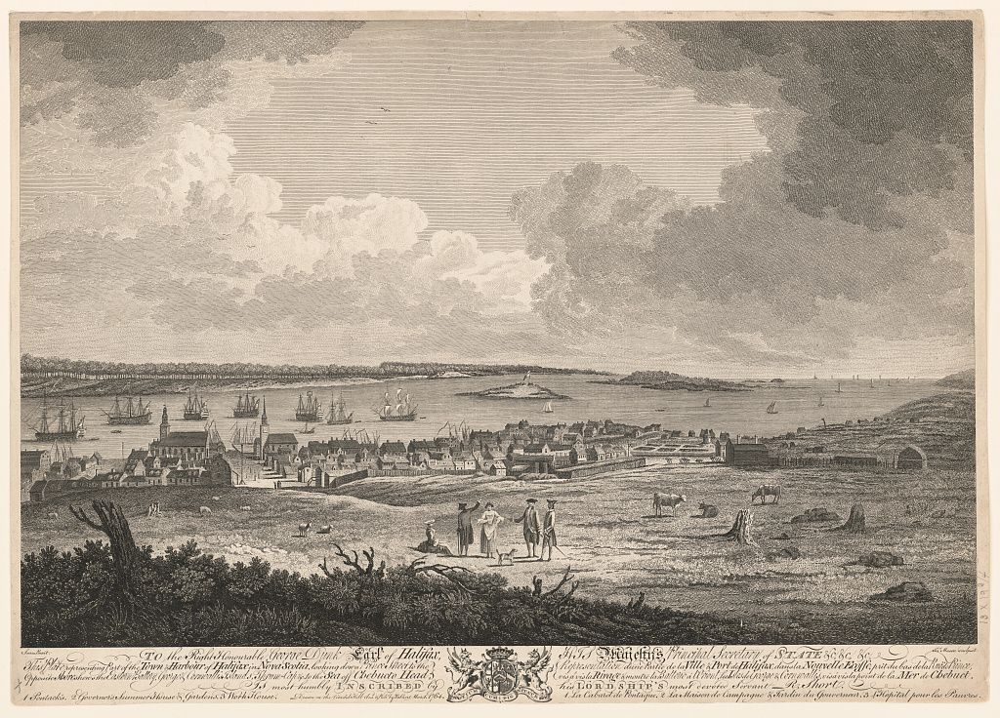

Biography
Samuel Tufts, a master mariner, was a Nova Scotian Loyalist. In 1782 his schooner was taken by the American frigate Alliance under Capt. John Barry, and he was sent to Bermuda as Barry’s messenger.
Service Record
Town: Nova Scotia; Boston; near Quoddy Point, Me. · Dates: 1758 – 1819
Loyalist. This man sided with the Crown during the Revolution. He is included as part of the family record, not as a Patriot soldier.
Born 2 Oct. 1758; died 14 Jan. 1819 in Boston; master mariner; Nova Scotian Loyalist. (Tufts Kinsmen, Vol. I, p. 141, family no. 28-11)
Captain of the schooner Dolly, sailing Bermuda to Halifax, captured 4 Aug. 1782 by the American frigate Alliance, Capt. John Barry, with a cargo of brown sugar, molasses, onions, and limes. (The extract says “out of New London Conn.”) (Tufts Kinsmen, Vol. I, p. 141, family no. 28-11)
Barry put Samuel aboard a pilot boat to Saint George with a letter to the Governor of Bermuda threatening to stay three weeks hindering shipping unless all American prisoners were released. Samuel later settled near Quoddy Point, Me. (Tufts Kinsmen, Vol. I, p. 141, family no. 28-11)
Family Connection
Family number 28-11 in Tufts Kinsmen, Vol. I. Parents are not named in the extract seen.
Spouse(s)
Not found in the sources checked (Brooks 1855 Register of Families; Wild; Find a Grave data on file; Tufts Kinsmen Vol. I extract).
Authoritative IDs / Index Numbers
| Source | ID / status |
|---|---|
| Perseus person index (auth=) | auth=tufts,samuel. This is a name-level key shared by every Samuel Tufts in Perseus, not a personal ID. Use it with the passages cited on this page. |
| Find a Grave memorial | Uncertain: 29337459 (Westford), likely not him. Flagged; not used. |
| Brooks, History of Medford (1855) register no. | Checked, no entry confidently matched |
| Tufts Kinsmen, Vol. I family no. | 28-11 |
| Mass. Soldiers and Sailors | Not yet checked for this page |
| DAR ancestor no. | Note: Pending further work. |
| FamilySearch ID | Note: Pending further work. |
| Geni profile | Note: Pending further work. |
| WikiTree ID | Note: Pending further work. |
| Town / vital records | Medford VRs not yet checked by volume and page |
Only IDs confirmed against dates and family are given as matches. “Not yet checked” means the source has not been searched; “Checked, not found” means it was searched without a match.
⚑ Unverified
His brother Joshua Bradstreet Tufts (28-12) is recorded without Revolutionary service. No other source on this site has yet been checked for this man.
Pictures








.png){kind=link}

